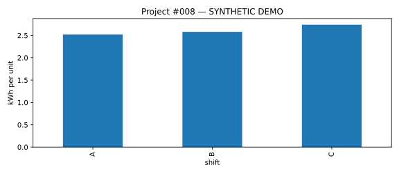

Visualização calculada

Métricas reproduzíveis
| Base de dados | synthetic / reproducible, not operational evidence |
|---|---|
| Projeto | 8 |
| readings | 270 |
| Total KWH | 190,4 |
| units | 72,96 |
| Weighted KWH per unit | 2,61 |
| Total cost BRL | 155,1 |
| interpretation | Intensity denominator accounts for units; compare product mix before attributing causes. |
Reprodutibilidade
As tabelas são um resumo estático das métricas calculadas. Não afirmamos conectividade com SAP, Power BI ou operação produtiva.